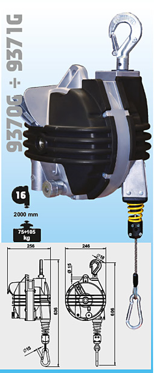

Página principal equilibradores
La empresa Tecsolda distribuye una gama completa de EQUILIBRADORES con capacidad de 0,2 a 180 kg y con la carrera del cable de hasta 3 metros.
El EQUILIBRADOR es una herramienta esencial para atenuar la fatiga y permitir aumentar la productividad al reducir el tiempo de procesamiento, mejorando la calidad del trabajo.
El
uso del equilibrador también limita el desgaste de los cables de
alimentación de las pinzas de soldadura, evita daños a las personas y
herramientas.
La
aplicación del equilibrador es absolutamente versátil, se puede
utilizar en islas de soldadura o en la línea de montaje y es adecuado
para el uso de herramientas pequeñas, como pistolas nemáticas
industriales, destornilladores y diferentes.herramientas.
Los
equilibradores se construyen de acuerdo con la norma DIN 15112 y su
tecnología de construcción única respeta las normas vigentes sobre
seguridad en lugares de trabajo.
Entre
la amplia gama de equilibradores distribuidos por Tecsolda, hay una
nueva línea de equilibradores con certificación ATEX, adecuados para su
uso en zonas con riesgo de explosión en presencia de gases inflamables
o polvos combustibles.
La
estructura ergonómica de los equilibradores ha sido desarrollada para
facilitar cualquier operación de uso, facilidad de movimiento con
resistencia mínima a la fuerza del cuerpo y esfuerzo mínimo para elevar
las pinzas colgantes de soldadura.
Tecsolda bajo demanda puede proporcionar versiones especiales de equilibradores para aplicaciones especificas.
Contacto y catálogo equilibradores: Equilibradores Tecsolda Tel. 93 777 64 21
Página en construcción